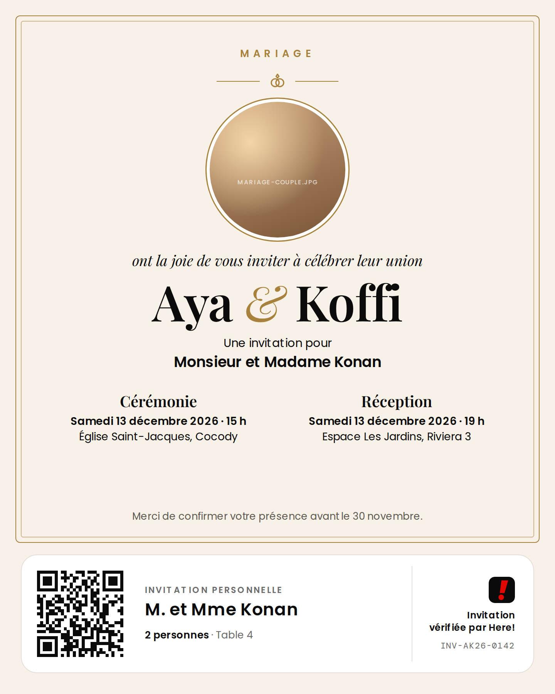

Quel type d'événement organisez-vous ?
Mariage
Dot
Baptême
Funérailles
Anniversaire
Brunch
Retrouvailles
Réunion
Séminaire
Concert privé
Festival
Autre
Mariage Aya & Koffi
Samedi 13 décembre 2026
15:00
Cérémonie
Église Saint-Jacques, Cocody
15:00
Réception
Espace Les Jardins, Riviera 3
19:00
320
450
VIPFamilleAmisCollèguesAjouter
Vos informations restent privées. Seule votre conseillère Here! y a accès.
Enregistrer le brouillonContinuer : les invités
Ce que nous préparons pour vous

Modèle conseillé : CérémonieVous pourrez le changer à l'étape 3.
J−70Envoi des invitations sur WhatsApp
J−631re relance aux invités sans réponse
J−562e relance WhatsApp
J−52Appels de votre conseillère aux derniers invités
J−1Rappel avec le QR code d'entrée